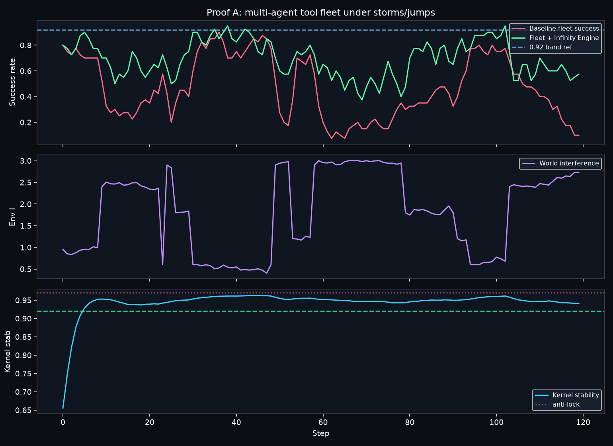
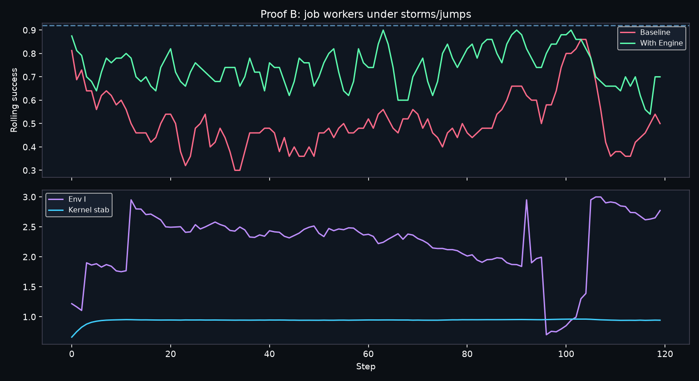
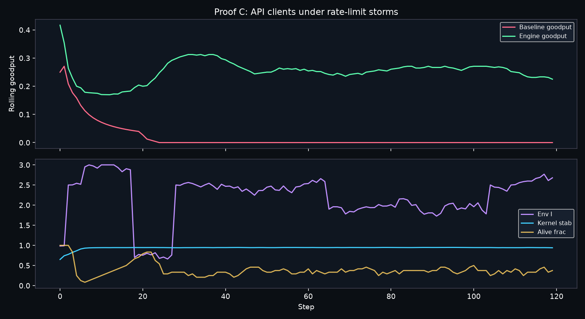

Pre-built results from this Soft Pack. Click any card. Re-run scripts live under portfolio/.
Open full case study HTML

Open full case study HTML

Open full case study HTML

Re-run: portfolio/proof_a_agent_fleet/run_proof_a.py (and B/C). Kernel at pack root.